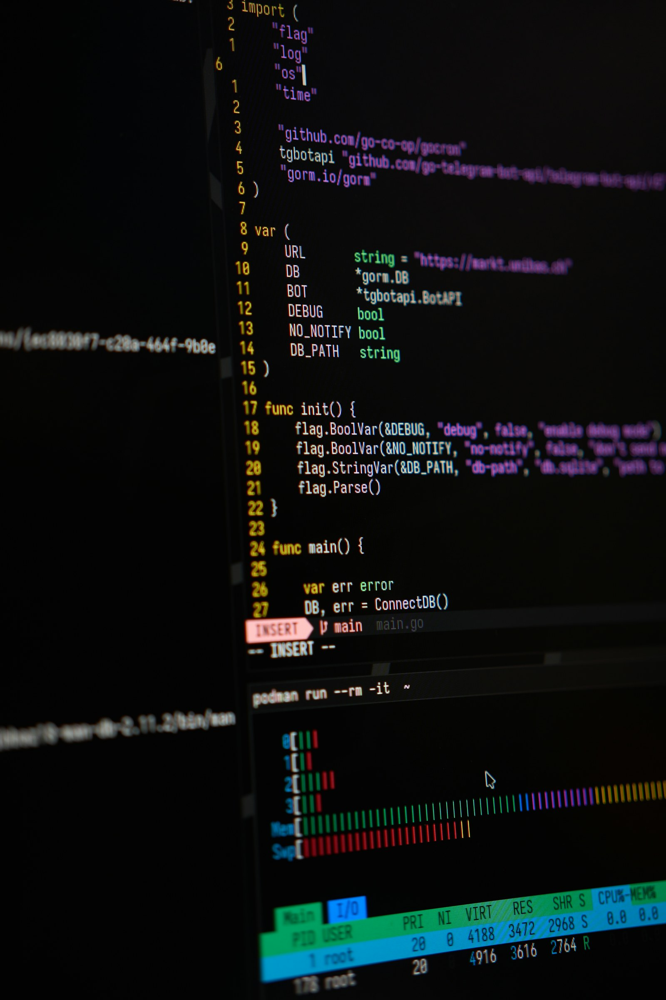
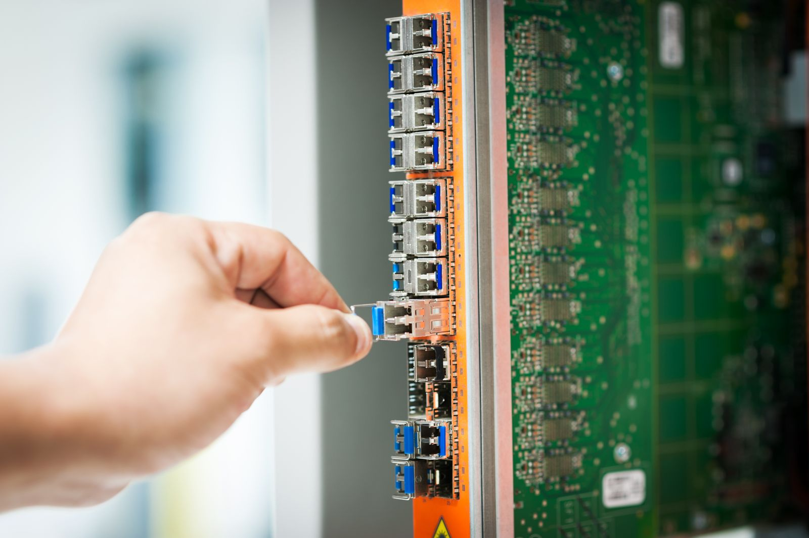

PHPは、企業サイト、WordPress、ECサイト、予約システム、 会員サイト、業務システムなど、Webサービスの裏側で広く使われています。
今回、各社の対応を分けたのは、修正版の有無だけではありません。 対象を特定できるか。止める前に戻し方を確保できるか。 更新後にログイン、予約、決済、管理画面まで確認できるか。 平時の運用体制が、そのまま停止時間の差として現れました。
重大な脆弱性が公表されたとき、自社への影響を判断し、 安全に止め、直し、利用者へ戻せるか。
国内で相次いだのは「被害」ではなく予防的な停止
国内で公表された主な影響は、不正アクセスや情報漏えいの発生ではなく、 被害を防ぐためのサービス停止や緊急メンテナンスです。
| 組織・サービス | 公表された対応 |
|---|---|
| コドモン | 保護者向けアプリや職員用管理画面などを停止。 脆弱性把握から主要機能再開まで約18時間、 夜間作業には13名が参加 |
| pixiv | 影響を受ける可能性があるサービスを事前停止。 修正版公開後、ビルド・テスト・デプロイを行い約30分で解除 |
| 名古屋市 | 10月22日15時時点で、粗大ごみ受付や図書館関連など 44のサイト・システムを全面停止 |
| さくらインターネット | 会員関連機能や一部サービスを予防的に停止し、 修正版を順次適用 |
| ソフトバンク | 法人向けの一部Webサイト・サービスを 緊急メンテナンスで一時停止 |
| TKC | 会計事務所、関与先企業、地方公共団体向けの 一部サービスを一時休止 |
出典： コドモン、 pixiv、 名古屋市、 さくらインターネット、 ソフトバンク、 TKC
これらは「各社で攻撃被害が発生した」という意味ではありません。 ただし、攻撃される前の安全確保だけでも、サイトや業務サービスを 止めざるを得なかった点は重要です。 脆弱性対応はWeb担当者だけの問題ではなく、 売上、顧客対応、行政サービス、社内業務に直結する経営課題です。
なぜ今回の脆弱性は深刻なのか
PHP2Shellの2件は、いずれも深刻度が「Critical」に分類され、 CVSS v4.0で9.2と評価されています。 悪用された場合、ログインしていない外部の第三者に、 PHPを実行しているサーバー上で任意のコードを実行される可能性があります。
PHP公式は、PHP-FPM、Apacheのmod_php、php-cgi、FrankenPHP、 LiteSpeedなど、Webリクエストを処理するPHP環境を広く対象として、 直ちに更新するよう求めています。 PHP公式アドバイザリ
修正済みの最低バージョンは次のとおりです。
| PHP系統 | 修正済みバージョン |
|---|---|
| PHP 8.5 | 8.5.12 |
| PHP 8.4 | 8.4.27 |
| PHP 8.3 | 8.3.36 |
| PHP 8.2 | 8.2.35 |
PHP 8.1以前はすでに公式サポートが終了しています。 今回、一部の旧バージョンには緊急の最小バックポートが提供されていますが、 長期的な保守が再開されたわけではありません。
IPAも、更新が難しい場合には、外部からのアクセス遮断や サービスの一時停止まで含めて判断するよう求めています。 IPAの注意喚起
本当に難しいのは「アップデート」ではない
「修正版へ更新すれば終わり」と考えるのは危険です。 実際の企業環境では、次のような問題が同時に発生します。
- 自社のどのサイトやシステムでPHPを使っているか分からない
- サーバー上の表示バージョンと、実際に動いているPHPが異なる
- PHPを更新するとCMSや独自機能が動かなくなる
- 制作会社や以前の担当者と連絡が取れない
- PHP本体を更新しても、古いワーカープロセスが動き続けている
- コンテナの再構築や再デプロイが必要になる
- 修正前に攻撃されていなかったかを確認できていない
- 自社は対応済みでも、委託先や外部サービスが停止している
JPCERT/CCは、更新だけでなく、異常なPHPSESSID、不審なリクエスト、 HTTP 500エラー、PHPプロセスの異常終了、不審なファイルや 外部通信などを確認するよう案内しています。 また、「不審な痕跡が見つからない」だけでは、 侵害がなかったと断定できません。

現在の状態によって、最初の一手は変わる
まだ公開を続けている場合は、 まず対象バージョンと実行方式、外部公開範囲を確認します。 判断材料が揃わないまま公開を続けるより、 管理画面や一部経路だけでも制限できるかを先に検討します。
すでに停止している場合は、 復旧を急ぐ前にバックアップと切り戻し手順を確保します。 更新できても、ログインや決済など主要機能が壊れれば 別の事業停止が生じるためです。
更新済みの場合も、再起動・再構築が済んでいるか、 実際のWebリクエストが修正版のプロセスへ到達しているか、 修正前の時間帯に不審な挙動がなかったかを確認します。
安全に止め、直し、戻すための順序
緊急時ほど、作業を増やすのではなく、 判断の順序を固定することが重要です。
URL、サーバー、PHPの実行方式、バージョン、担当者をひも付けます。
重要度と外部公開範囲を見て、必要な範囲だけを安全側へ倒します。
バックアップ、設定差分、切り戻し方法、ログの保全を先に行います。
再起動や再デプロイ後、認証、予約、購入、通知、管理画面を確認します。
一度に全面公開せず、エラーや外部通信を見ながら復旧範囲を広げます。

対応速度を決めるのは、平時の準備
pixivでは、修正版の公開前から複数のビルド経路を準備し、 公開後約30分でメンテナンスを解除しました。 一方、自治体や企業では、影響範囲の把握、保守会社との調整、 互換性確認などに時間がかかり、 複数サービスを長時間停止する例もありました。
どちらが正しいという話ではありません。 同じ脆弱性でも、資産管理、バックアップ、検証環境、自動テスト、 デプロイ手順、緊急時の責任者が整備されているかによって、 事業への影響が大きく変わります。
今回だけ直すのではなく、次を早く見つける
脆弱性情報は、PHP公式、IPA、JPCERT/CC、クラウド事業者、 CMSやライブラリの配布元など、 複数の場所から異なる形式で公開されます。 担当者が毎日すべてを読み、 自社に関係する情報だけを選ぶ運用には限界があります。
そこでSPACE GLEAMが提案するのが、外部の注意喚起と、 自社が使っているサーバー、PHP、CMS、ライブラリの情報を AIで照合する仕組みです。 AIが対象製品、バージョン、成立条件、推奨対応を読み取り、 自社の構成と突き合わせます。
担当者には、単なるニュースの要約ではなく、 「確認が必要なサイト候補」「外部公開の有無」 「判断根拠となる公式情報」「最初に確認する担当者と手順」を届けます。 読む情報を増やすのではなく、 判断までの距離を短くする設計です。
AIがサーバーを勝手に停止・更新する設計ではありません。 情報収集と照合を早め、 停止や変更は根拠を確認した担当者が承認します。
「事前検知」でできること、できないこと
未知のゼロデイ脆弱性をAIが事前に予言することはできません。 一方で、被害や長時間停止につながりやすい 「公表に気づくのが遅い」「対象資産が分からない」 「担当者しか手順を知らない」という遅れは減らせます。
AIプロダクト会社だから、運用そのものを作り直せる
一般的な保守対応では、注意喚起を人が見つけ、 保守会社へ連絡し、 対象サーバーを確認してもらう流れになりがちです。 この流れは一度の事故には対応できても、 次の脆弱性でも同じ確認作業を繰り返します。
Vulnerability Operations
導入後の情報整理を示す参考モックです。実在する監視画面ではありません。
SPACE GLEAMは、自社SaaSやWebシステムを 開発・運用している知見を生かし、 緊急対応だけでなく、情報収集、資産との照合、 担当者への通知、対応履歴の保存までを 一つの運用として設計します。 専用の大きな管理画面を最初から作る必要はなく、 メール、Slack、Teamsなど現在の業務導線へ組み込むことも可能です。
導入は、一つの外部公開サービスを対象にした 読み取り専用の検証から始められます。 資産情報の精度、不要な通知の数、 対象特定までの時間を測り、 実務で役立つと確認できた段階で対象を広げます。 いきなり自動停止や自動更新を行う設計にはしません。
緊急対応と、再発を防ぐ仕組み化を分けて進める
目の前に危険がある場合は、まず公開範囲の制限、 バックアップ、修正版の適用、動作確認、ログ確認を優先します。 緊急時に新しい仕組みを同時導入すると、 変更点が増えて復旧判断が難しくなるためです。
復旧後は、その対応で判明したサーバー構成、実行方式、 依存関係、確認項目、連絡先を資産情報と手順書へ残します。 そのうえで、公式情報の自動収集、 AIによる対象候補の抽出、担当者への通知、 対応履歴の保存を段階的に加えます。 一度の緊急対応を、 次回の初動を早める基盤へ変える考え方です。
SPACE GLEAMへ相談した後の進み方
最初の確認では、分かる範囲のURL、現在の公開状況、 利用中のサーバーやCMSを伺います。 その情報から、調査対象、停止が必要な範囲、 バックアップと切り戻し、 更新後に確認すべき業務機能を整理します。
対応後は、実際に確認したバージョンや設定、 実施した変更、動作確認の結果、 今後解消すべき課題をまとめます。 「更新した」という一文だけでなく、 次の担当者が状況を追える形で残すことを重視します。
なお、即時復旧を一律に約束するものではありません。 必要な時間と費用は、対象サイト数、管理権限の有無、 検証環境、旧バージョンとの互換性、 侵害調査の必要性によって変わります。 初期確認後に、優先順位と進め方を明確にします。
どこまで支援し、どこから専門機関と連携するか
SPACE GLEAMでは、構成確認、公開範囲の制限、 バックアップ、PHP更新、再起動、再構築、 再デプロイ、主要機能の確認、 復旧後の監視までを一貫して支援します。 ホスティング会社や現在の制作・保守会社との役割整理も行います。
侵害が疑われ、個人情報や機密情報へのアクセス、 法令に基づく報告、高度なフォレンジック調査が必要な場合は、 むやみにサーバーを変更せず証拠を保全します。 そのうえで、必要に応じて セキュリティ専門機関や法務と連携し、 対応方針を整理します。
ご相談前に分かると、確認が早くなる情報
- 対象サイトやサービスのURL
- 利用中のサーバー、クラウド、ホスティング会社の名称
- WordPressなどのCMS、または独自システムかどうか
- 現在も公開中か、停止中か、更新済みか
- 制作会社、保守会社、社内管理者へ連絡できるか
- バックアップ、ログ、ソースコードがどこにあるか
すべて揃っていなくても、 URLと現在の状況が分かれば確認を始められます。 パスワード、秘密鍵、APIキーなどの認証情報は、 問い合わせフォームへ記載しないでください。
今回の対応を、次に慌てない仕組みへ
脆弱性への備えは、修正版を早く適用することだけではありません。 どのシステムが影響を受けるのかを把握し、止める判断と安全に戻す手順を持っていることが、 事業への影響を小さくします。
今回確認したPHPのバージョン、構成、依存関係、判断の経緯を残し、 外部の脆弱性情報とAIで照合できる状態にすれば、 次回は「何が対象なのか」を探すところから始めずに済みます。 AIに判断を任せるのではなく、担当者が根拠を確認し、早く動ける仕組みにすることが重要です。
SPACE GLEAMは、目の前の復旧と、その先の検知・通知・運用設計を一続きで考えます。 今回の緊急対応を一度きりで終わらせず、次の備えに変えるところまで支援します。
※本記事は2026年10月24日時点の公式発表に基づいています。 国内でサービス停止や緊急メンテナンスが公表されていますが、 それらを不正アクセスや情報漏えいの発生事例として扱うものではありません。 個別の影響は、PHPのバージョン、実行方式、 サーバー構成、アプリケーションによって異なります。